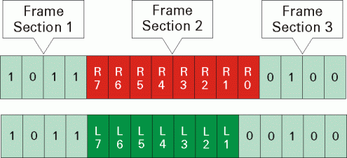

DSM Error Checking
The DSM feature checks for the following important error cases. Some of the error checks are only performed when the program is downloaded into the hardware.
- Sequencer program is checked against the available data in DSRC label
The number of source data bits requested by the sequencer program, which is normally dependent on the loop count of the MAIN label using source memory, cannot exceed the size limit of the DSRC label. Otherwise, the following error message will be printed in the report window and the program download fails:
ERROR: Label "dsmtest", vec no <vec_no>, cmd no <cmd_no>, instr SOURCE - The SOURCE actions exceed the boundary of the source label!"
- Source port is checked against the port used by the MAIN label
The source port, which is the port used by the DSRC label, must be a subset, or equal to, the port used by the MAIN label. Otherwise an error message will be printed in the report window and programming of the
STARTSRCinstruction in the Pattern Tool or Firmware Interface fails. - Memory Location checking
The software will check the memory location restriction when you add a new
STARTSRCinstruction in the Pattern Tool or Firmware Interface. - Sequencer Program is checked against the
SOURCE_DATA_TEMPLATEdefined in VVCThe parameters for the
SOURCEinstruction must be consistent with theSOURCE_DATA_TEMPLATEdefined in VVC. If there's any mis-match, a warning message will be printed in the report window.For example, regarding the MAIN Label shown in Entering the Vectors, if you define "
SOURCE 2,5" instead of "SOURCE 2,4", the software will print out the following warning message at the proper time:WARNING: Label "dsmtest", vec no <vec_no>, cmd no <cmd_no>, instr SOURCE - Possible incorrect usage of source memory. Reading 10 vectors from DSRC label does not match VVC which defines a 8-vector segment at the current source memory location, so undesired or inactive vectors may be read!
- SOURCE_DATA_TEMPLATE is checked across pins in the same VVC
The software requires that the number of bits being sourced should be same across all pins of one single source port. If there's any violation, the software will raise an error when parsing the VVC as shown in the following example.

The VVC Definition is an error case:
PINS pin1 SOURCE_DATA_TEMPLATE R[7-0] MAPPING 0 low 1 high PINS pin2 SOURCE_DATA_TEMPLATE L[7-1] MAPPING 0 low 1 highThe solution is adding one extra static bit into the source memory to align the source memory vectors across different pins.
VVC Definition is a correct case:
PINS pin1 SOURCE_DATA_TEMPLATE R[7-0] MAPPING 0 low 1 high PINS pin2 SOURCE_DATA_TEMPLATE L[7-1],0 MAPPING 0 low 1 high - Only limited Sequencer Instructions can be nested into a Counted Loop structure
Only
GENV,SOURCE,REPEATandNOPcan be nested in a counted loop structure. If there's any violation, an error message will be printed in the report window.
Functional changes
- Introduced before SmarTest 6.3.2